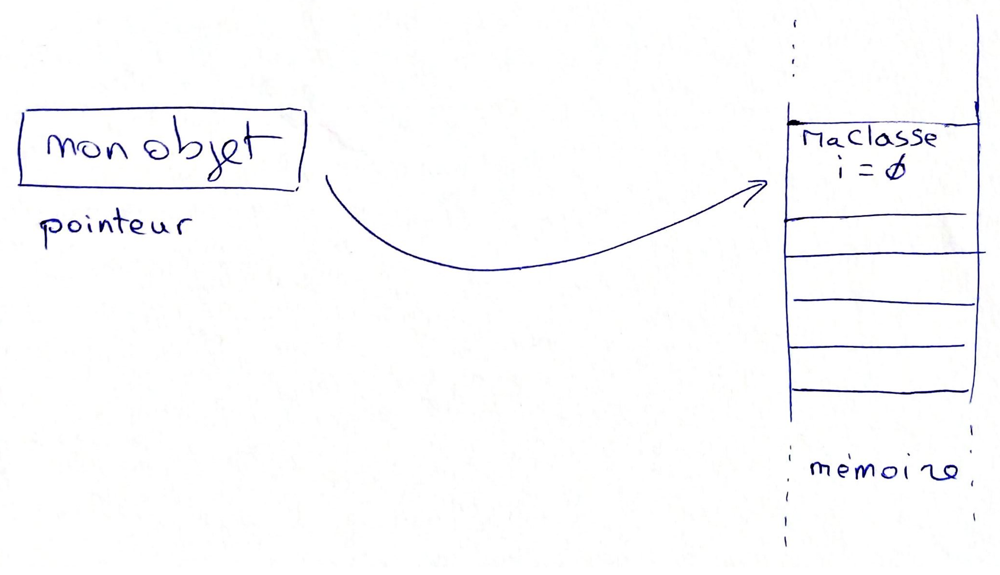
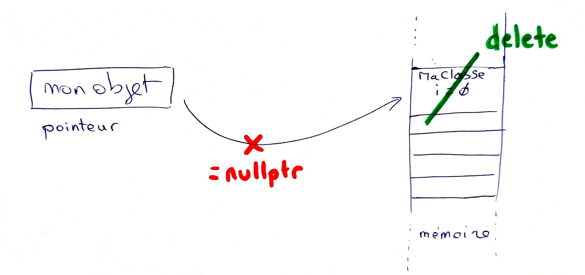

<style> img { margin:0 !important; vertical-align:top !important; } table td { border-bottom: 0 !important; padding-left: 0 !important; vertical-align:top !important; } </style> ## Security for QGIS : Memory safety Corpo #35 : Canopée<br/> Arjuzanx / Landes - 16/06/2025 Julien Cabieces --- ## Une présentation didactique  ... enfin j'espère (c'est un test!) --- ## Plan - Qu'est ce que le projet Security for QGIS ? - Quel est le problème de la memory safety ? - Comment le résoudre ? - Comment migrer la base de code QGIS ? - Clang Tooling --- ### Security for QGIS : 💵 Financement 💵 - Financement mutualisé - Orange - SNCF réseau - Grenoble - ... (parlez en autour de vous)  --- ### Security for QGIS : 9 Workpackages 1. Builds reproducibility and Build Systems 2. Binary and Docker Image Signing 3. Code Analysis and Dependency Management 4. External Security Audit and Global Analysis 5. GitHub Processes and Contribution Management 6. Plugin Security 7. Artifact Security Analysis 8. Security Training, Documentation, and Visibility 9. Improve Memory Safety 📍**Vous êtes ici** --- ### Memory Safety c'est quoi le problème ? [NSA](https://www.nsa.gov/Press-Room/News-Highlights/Article/Article/3215760/nsa-releases-guidance-on-how-to-protect-against-software-memory-safety-issues/), Novembre 2022 > Microsoft and Google have each stated that software **memory safety issues are behind around 70 percent of their vulnerabilities**. Poor memory management **can lead to technical issues as well**, such as incorrect program results, degradation of the program’s performance over time, and program crashes. --- > **NSA recommends that organizations use memory safe languages** when possible and bolster protection through **code-hardening** defenses such as compiler options, tool options, and operating system configurations. --- - Memory safe language - Avec "interpreter" 🐢 : Java, Python, TypeScript - Sans: Rust --- ### Memory Safety c'est quoi le problème ? #### Attention, vous allez voir du C++ 😱 --- ### Allouer de la mémoire ```c++ class MaClasse { int i = 0; }; MaClasse *monObject = new MaClasse(); ``` <p></p> pointeur = adresse ! --- ### La libérer, ~délivrer~ ❄️ ```c++ delete monObject; // détruire l'espace mémoire alloué monObject = nullptr; // effacer l'adresse ``` <p></p> --- ### Et si on oubli... - delete - fuites mémoire 💧 (memory leak) - Application grossit en mémoire - = nullptr (dangling pointer) - Accés à un segment mémoire détruit: CRASH 💥 --- ### Quel rapport avec la sécurité ?  --- ### Manuel du petit hacker 📖 ⚠️⚠️⚠️⚠️⚠️⚠️⚠️⚠️ ULTRA SIMPLIFICATION ⚠️⚠️⚠️⚠️⚠️⚠️⚠️⚠️ - Je combine: - un oubli de **delete** pour "laisser" un objet - un oubli de **=nullptr** pour utiliser un objet "laissé" - Et donc je pointe sur un objet non prévu initialement - exemple: un objet d'authentification ⚠️⚠️⚠️⚠️⚠️⚠️⚠️⚠️ ULTRA SIMPLIFICATION ⚠️⚠️⚠️⚠️⚠️⚠️⚠️⚠️ --- ### Manuel du petit hacker 📖 On combine aussi avec les out-of-bound access --- ### Comment on corrige ```c++ // MaClasse *monObject = new MaClasse(); std::unique_ptr<MaClasse> monObject = std::make_unique<MaClasse>(); // delete monObject; // monObject = nullptr; monObject.reset(); ``` On remplace 2 instructions par 1 seule!!! --- ### Pourquoi on l'a pas fait avant ? - QGIS a 20 ans - smart pointer: C++11 (2012) - État d'esprit : Get Good! "Merci de ne pas oublier" - Rust a popularisé la mode - On explicite TOUT --- ### Pourquoi ne pas tout ré-écrire en Rust - QGIS 1,5 Millons de code C++ à réécrire - Les dépendances à binder 🤮 /re-écrire - La mode passera, C++ continuera d'exister - cf, Java, Python, Go, C#, Dart...) --- ### Comment on transforme le code ?        Impossible de faire ça avec sed et des regexp !! --- ### AST: Abstract Syntaxique Tree On veut conserver la logique du code 🧠 ! Le code, c'est un arbre 🌳  --- ### Clang Tooling - Clang: compilateur - permet de définir des plugins - Donne accés AST - Permet de remplacer --- ### Clang query Requête sur du code (comme du SQL ou XPath) ```c++ cxxDestructorDecl( isExpansionInFileMatching( "QGIS/src/core/.*" ), has(compoundStmt(forEach(cxxDeleteExpr( has(implicitCastExpr(has(memberExpr(has(cxxThisExpr())).bind("member")))) ).bind("deleteExpr") )))).bind("destructor"); ``` Exemple: Matche tous les destructeur C++ qui contienne un delete d'une variable membre - Requête identification patterns ➡️ Remplace --- ### Jusqu'ici... - Concentré sur les cas "simples" (déjà bien complexe) - 3 PRs - 121 variables membres migrées - uniquement dans le module de core - Un [programme](https://git.oslandia.net/jcabieces/myconf/-/blob/0c15c16103847ea507992e171a74740101a195bd/qgis-refactor/with-libtooling/main.cpp#L12) développé pour faire la migration - Déjà des bugs latents détectés - Constructeurs par copie par exemple - rends plus difficile à casser --- ### A venir - Finir core - Lancer sur les autres modules - Migrer l'API --- ## Questions Corpo #35 : Canopée<br/> Arjuzanx / Landes - 16/06/2025 Julien Cabieces